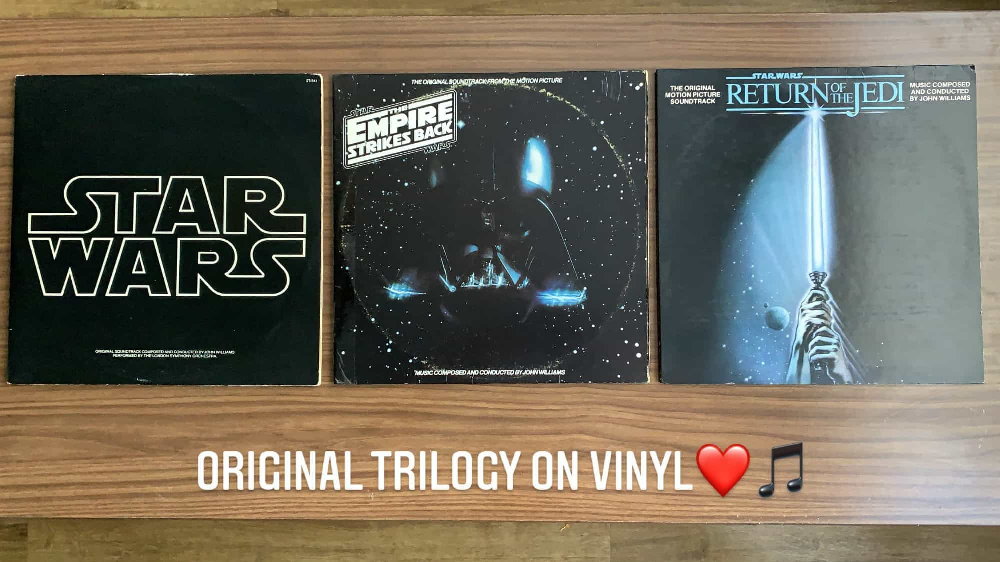

New Finds

I got the original Star Wars soundtrack on vinyl a few years ago, but for Christmas I received The Empire Strikes Back and Return of the Jedi, completing the original trilogy.
Star Wars
Something I like about records are the artist notes that come with it. In the original Star Wars record, there’s a sheet where John Williams explains some of what went into the different themes and songs. For example, the recognizable “Cantina Band” is the only song on the soundtrack that didn’t utilize the London Symphony Orchestra. George Lucas suggested Williams imagine “several creatures in a future century finding some 1930s Benny Goodman swing band music in a time capsule or under a rock someplace — and how they might attempt to interpret it”.
The Empire Strikes Back
I think the Empire Strikes Back has some of my favorite pieces. From the well-known “The Imperial March (Darth Vader’s Theme)” to the love theme between Han and Leia and the dramatic piece that underlines the duel between Luke and Vader.
Return of the Jedi
I always really liked “The Return of the Jedi” as a kid. The song plays during the dramatic rescue of Han Solo from Jabba the Hutt as Luke acrobats his way across the desert skiffs to the main barge.